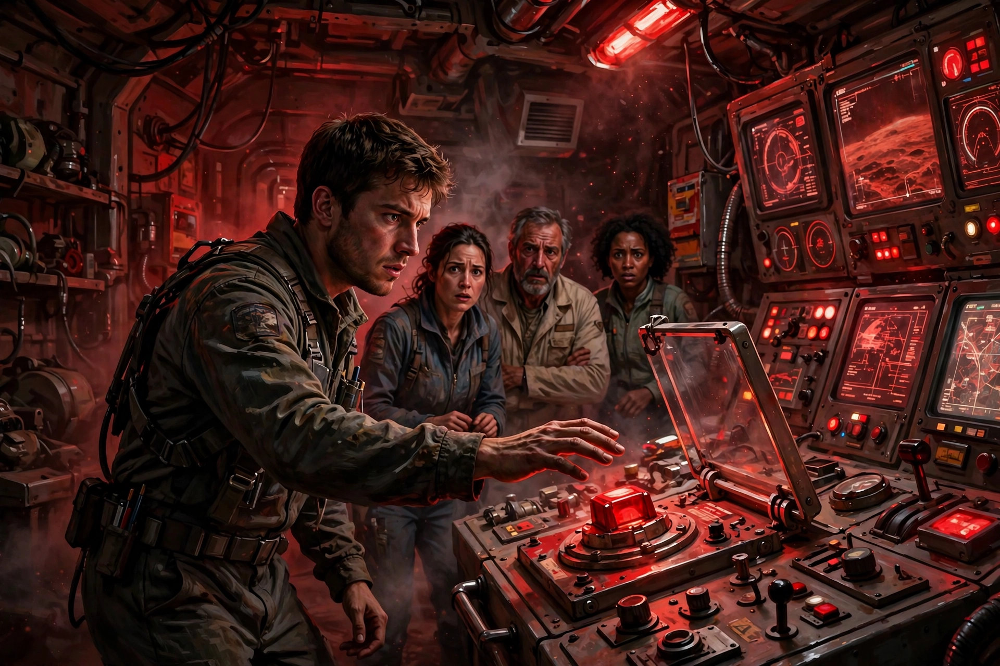
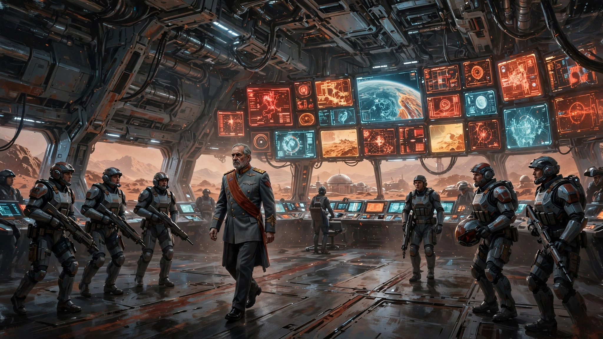

搬道岔式问题：关键时刻你会为了战友和亲人按下那个按钮吗？
《为全人类》是我继《苍穹浩瀚 》之后最喜欢的太空题材科幻片。目前最新的第五季已完结。其实早就想聊这部剧，奈何篇幅太长， 而且在我看来每季每集都很经典，所以一直不知从何聊起（与《王冠》的情况类似）。
昨晚看完第五季，一直在回味这一季，尤其是最后两集有些场面令我印象深刻甚至激动。忍不住来聊聊。在聊这两集之前，为没看过这部剧集的同学介绍下这部剧的背景故事及第五季发展到最后两集前的大致情节脉络。
《为全人类》是一部架空太空题材科幻剧，据我所知，这个类型非常独特，暂时没有其他类似剧集。架空题材的，如《高堡奇人》；太空题材，也有很多，如前面提到的《苍穹浩瀚 》。但架空加太空的恐怕就这一部。
先说说这个听上去很宏大又空泛的片名，英文是For All Mankind。之前我没太留意为什么叫这个名，在第五季中反复出现的一个情节让我大概了解了。女主之一（这部剧是群像剧，多男主和女主）Kelly Baldwin有几次拿出其父亲第一次登月时带去的一个金属铭牌，上面刻有一句著名的话：We came in peace for all mankind。其实这个铭牌在真实历史中也有，即阿波罗11号载人登月时，宇航员阿姆斯特朗带去的那块也刻有这句话。我想，剧名的For All Mankind即来源于此吧（下面简称FAM）。
再来简单概括下这五季的故事背景（以下梗概在AI内容基础上稍作修改）。
在苏联率先登月后（你没看错，在这个架空世界中，苏联比美国先登月），太空竞赛如火如荼继续进行。第1季从1969年开始，美国在震惊中加速追赶，招募女性宇航员，建立月球Jamestown基地，开启了性别突破与月球资源争夺的时代；第2季跳至1980年代，冷战白热化，月球成为军事前线，美苏在太空爆发冲突，个人牺牲与家庭破碎成为主旋律；第3季进入1990年代，三方火星登陆竞赛激烈上演，美国、苏联与私人公司Helios展开高风险角逐，年轻一代接棒，展现野心、合作与背叛；第4季来到2000年代初，火星已成殖民地，Happy Valley基地吸引普通民众前来，劳工权益、地球火星关系紧张、私企崛起，探讨殖民生活的现实困境；第5季推进至2010年代，火星发展为繁荣社会，金诺克斯特小行星事件后，数千居民开始追求自治与身份认同，地球控制与火星独立之争、代际传承、深空探索与人类未来方向的冲突全面爆发。全剧以硬核太空技术为骨架，家庭情感与地缘政治为血肉，跨越数十年展现了“如果太空竞赛从未结束”这一大胆假设下的震撼平行历史。
从时间线上可以看出，在这个平行时空中太空开发和科技发展的速度远超我们的现实世界，早在2000年代人类就建立了火星基地。而现实中，截至2026年6月，Elon Musk的SpaceX公司尚未上市（将于6月12日上市），移民火星更是八字还没一撇。
在我看来，第五季与前四季最大的不同之处在于，太空探索和开发不再是关注的重点，人类内斗的劣根性再次来到聚光灯下。除了少量篇幅讲述人类深入探索太阳系其他行星（具体指土卫六Titan）上生命的可能性，其他内容基本都围绕地球和火星基地之间愈演愈烈的争端。最后两集，这种争端到达最高潮。相较而言，在土卫六上发现生命的重大新闻倒更像是背景板般存在感薄弱了。
接下来我就来聊聊这两集中让我印象深刻的一些故事片段吧。
第九集的背景是，随着Helios公司一份机密文件的泄露，火星和地球的矛盾发展到白热化。这份文件的主要争议点在于一个保密的“自动化”计划，这个计划一旦实施，火星基地上的大多数人将会失去工作被遣返地球。而这些人在火星基地的建设发展中出力出汗，已经把这里当成新的家园了。因为资本家的贪婪而失去工作和家园，他们当然不愿意。于是，在以Miles为代表的几个核心成员的领导下，火星上的工人武装起来，控制了整个基地（包括控制土卫六任务的航天指挥中心，下称MOCC）。把原火星基地总督（苏联人，下称”总督“）为首的原基地领导团队暂时监禁起来。然后与地球上一个由美苏为首的几个航天强国 （但不包括中国）组成的M6集团喊话，提出火星起义者的诉求。
美苏领导人对此事件采取极为强硬的态度，声称“坚决不与恐怖分子谈判”。火星这边采取的对策是中断小行星铱开采项目对地球的供应，因为该项目给M6集团带来巨额利润，此举可谓打蛇打七寸。盛怒下的M6秘密派出一支全副武装的太空部队“亿里迢迢”前往火星“剿灭”火星起义者。由于采取了高明的反侦察手段，这支部队直到快抵达火星时才被火星基地发现。凭借攻其不备的优势，加之这支部队配备了高素质且装备精良的军事指挥和作战人员，他们在登陆火星之初的军事行动非常顺利，几乎所向披靡。火星起义者节节败退，损失惨重。
当然火星起义者一方也不是毫无作为。在讲火星起义者采取的反制措施前，先提下一个关键人物的“反水”，那就是火星上的苏联总督。这位总督本来是M6集团的坚定支持者（有点废话，否则也不会得到M6的信任被派遣为火星总督了），在起义开始时他被监禁起来，思想上还是敌视火星起义者，没啥转变。后来地球传来消息，苏联政府的一系列昏招彻底把他推向了对立面。他们先是逼迫总督的妻子在电视上发表声明，与总督“划清界限”。接着，把他的孩子也控制起来。这下总督坐不住了，我这边为你们卖命，你们居然这样对我？于是反了他娘的。总督的反水对于火星起义者团队无疑是一个巨大的转折，毕竟总督掌握的资源和秘密太有用了。在他的帮助下，火星起义者成功地开展了一系列反击。
首先，火星起义者明白，小行星采矿项目是M6最看重的资产，太空部队必然会派一队人去攻占，所以火星基地这边打算抢先派人上去对采矿基地进行爆破。这次爆破任务风险极大，几乎是自杀性的。所以派谁去成了问题。火星安保团队中有一名志愿者站了出来，但还缺一个人。于是火星总督自告奋勇。虽然他从事行政工作多年，但好歹也是资深的宇航员。意外的是，敌对双方几乎前后脚到达小行星。爆破志愿者稍微占了点先机，在太空部队到达前安置好了定时炸药。正当爆破志愿者准备撤离时，发现太空部队有两名战士刚刚到达。此时拆除炸药已经来不及了，而爆破志愿者也不愿意爆破造成对方伤亡，于是他们通过无线电通知对方紧急撤离。太空部队收到消息撤离也来不及了，其中一名男战士在爆破瞬间以身体为盾救了女战士，自己当场死亡。
发生了首起伤亡事件后，双方间的武装冲突不断升级，局势变得一发不可收拾。表面上看，火星基地方面伤亡和损失要惨重得多。 太空部队似乎收到了格杀勿论的命令，对火星基地人员毫不留情。甚至误杀了一队”皇协军“（火星基地的安保团队），简直是杀红了眼。第九集在太空部队活捉总督等一队人时达到高潮。总督当场表明身份，要求见太空部队的指挥官。太空部队得知总督身份后，对他很是客气（显然收到M6指示对他继续利用），马上同意派人护送总督去。当时一同被捕的起义人员痛骂总督首鼠两端，观众看到这里义愤填膺的同时一脸懵逼，火星基地就这样轻易被剿灭了吗？殊不知，下一集（也是最终集）即将迎来一个大反转。接下来也将迎来我个人认为本季最精彩（也许是美剧史上最精彩）的一个名场面。
第10集的其他剧情我都懒得细讲了，简略带过：总督和起义领导事先商量好，自己假装落到太空部队手中，然后利用总督身份孤身深入临时指挥部；到达指挥部时再利用控制中心遥控加大指挥部所在舱室的氧气浓度，最后遥控点火爆破将太空部队指挥部一锅端。废话不多说，直接跳到16:53名场面。在这里，火星起义者领袖Miles面临一个经典的搬道岔式问题（又称“电车难题”）。一切按计划就绪，按下一个按钮，就能让充满高浓度氧气的指挥部舱室爆燃。不按的话，节节胜利的太空部队马上就能攻克火星基地的核心MOCC。火星起义者将被屠杀殆尽，轰轰烈烈的火星独立运动即宣告失败。之前本来是由起义队伍中的一名工作人员来按这个按钮，但在圣母婊Aleida（Helios公司CEO）的强烈反对声中（说要留一点humanity）在关键时刻声称下不了手。就在这千钧一发之际，Miles说了句“我来”，犹豫半秒后按下按钮。看到这里，我不禁起身欢呼。


真不是我冷血，为屠杀欢呼，视生命为草芥。圣母婊们最大的逻辑悖论在于，你对敌人圣母了，敌人会放过你吗？没有人喜欢战争，但一旦发生战争，就要认清战争的本质。战争的本质就是“不是你死就是我活”啊。Humanity是仁慈，但不是愚蠢。如果你对敌人的humanity，换来的是战友和亲人的惨死，这还能算humanity吗？为了占据道德制高点而不去阻止邪恶力量伤害更多无辜的人，这是假仁慈，真虚伪！
由此我想起众多中国科幻迷多年来的“意难平”：《三体》里的程心作为人类代表面对三体人入侵时，为了她心中的“humanity”而没有按下按钮，导致罗辑苦心建立起来的地球防御体系瞬间崩塌，地球上无数人为此丧生，幸存人类全部沦为三体人的阶下囚。至今，很多科幻迷甚至三体迷回想起这个片段时仍然扼腕叹息。
其实，大多数美剧里都有类似的情节或桥段。在某个决定无数人命运的生死关头，最终胜出的多数是圣母婊。像FAM第十集这样少有的正常人彻底战胜圣母婊的名场面无疑是一股清流。类似名场面我记得的还有《行尸走肉》早期有一集，在一个教堂里，Rick及其队友遭到一群敌对陌生人的袭击，Rick他们奋起反抗缴了对方的械。对方长出一口气，以为缴械表示可以保命。谁也没想到Rick接下来一梭子把他们团灭了。看上去很残忍对吧，但想想行尸走肉里那样的极端末世背景，只有对敌人够狠才是唯一的生存之道。不过行尸走肉后来在Glenn之死后就烂尾了，那是另外一个话题就不展开了。
那么问题来了，如果是读到这里的你，面临这个搬道岔式问题，你会按下那个按钮吗？